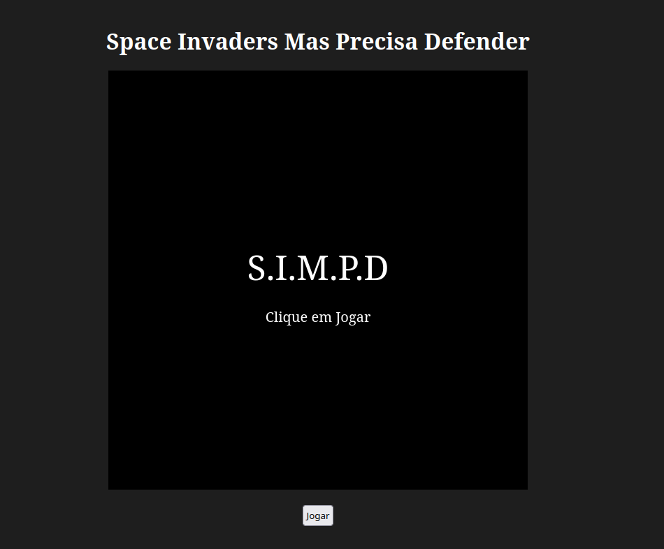
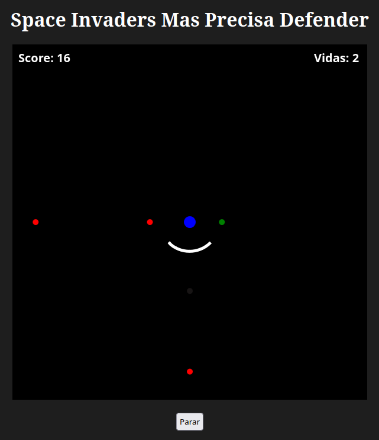
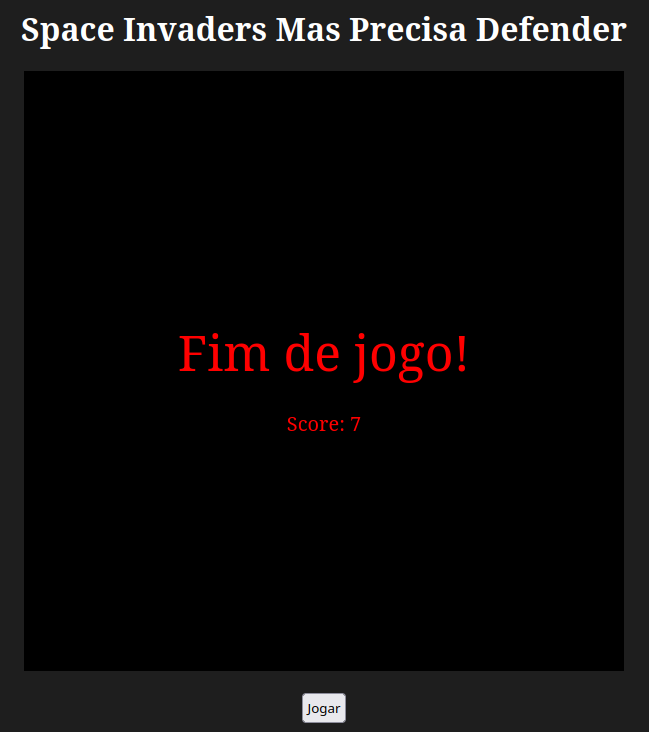

Sobre o jogo
Space Defenders Mas Precisa Defender (S.I.M.P.D) é um jogo feito para navegadores inspirado em Space Defenders,
porém, como o nome diz, ao invés de atirar, o jogador deve se defender dos "invasores".
Foi utilizado JavaScript juntamente com Canvas para a criação do jogo, onde cada parte do código foi dividida em funções e comentada para facilitar o entendimento.
Prints do funcionamento



Instruções
Projéteis virão aleatóriamente das 4 direções cardeais, aumentando em velocidade e quantidade conforme sua pontuação aumenta,
onde sua missão é defender o círculo azul no centro da tela utilizando o escudo dos mesmos.
Os controles são simples, o jogador deverá usar as setas do teclado para mover o escudo.
São quatro tipos de projéteis:
O mais comum, sem nenhuma propriedade especial
Extremamente rápido, gera o triplo de pontos.
Um projétil benéfico, recupera 1 vida caso deixe passar do escudo. Caso defender, não ganha a vida entretanto.
Dificil de ser visto, porém um pouco mais devagar que o normal. Gera o dobro de pontos.